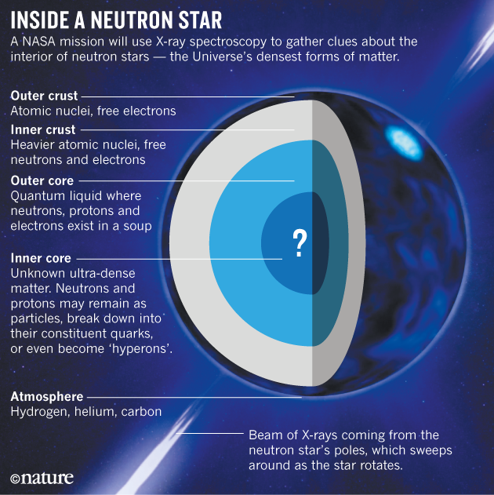

Introduction
Imagine a cosmic phenomenon so incredible that it challenges the boundaries of our understanding of space and physics. Deep within the heart of a massive star, a remarkable transformation takes place when its nuclear fuel runs out. This celestial event gives birth to one of the most fascinating and enigmatic objects in the universe – neutron stars. Neutron stars are like the stellar skeletons left behind after a supernova, and they possess mind-boggling properties that boggle the human imagination.
Neutron stars are the remnants of massive stars that have exhausted their nuclear fuel and undergone a cataclysmic explosion known as a supernova. When a star several times more massive than our Sun runs out of fuel, its core collapses under the force of gravity, packing an astonishing amount of mass into a tiny volume. Imagine compressing the entire Earth into a sugar cube – that's the level of density we're talking about. In fact, neutron stars are so dense that a teaspoon of their material would weigh as much as a mountain on Earth.
These exotic objects are composed almost entirely of neutrons, the subatomic particles found in the nucleus of an atom. Under the intense gravitational pressure, electrons are forced to combine with protons, creating neutrons and forming a dense core. Neutron stars are incredibly small compared to their parent stars, typically only about 10 to 20 kilometers (6 to 12 miles) in diameter. Despite their small size, they possess immense gravitational forces, capable of bending and distorting the fabric of spacetime around them.
One of the most remarkable characteristics of neutron stars is their rapid rotation. When the original star collapses, its conservation of angular momentum causes the neutron star to spin at incredibly high speeds. Some neutron stars can complete hundreds of rotations per second! This rapid spinning generates powerful magnetic fields that are trillions of times stronger than Earth's magnetic field. These magnetic fields can unleash energetic bursts of radiation, observed as pulsars – beams of light that appear to pulse as they sweep across our line of sight.
